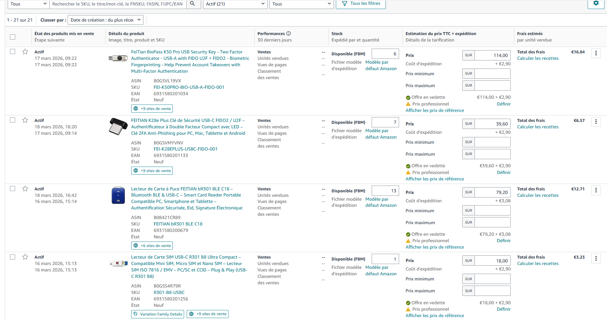
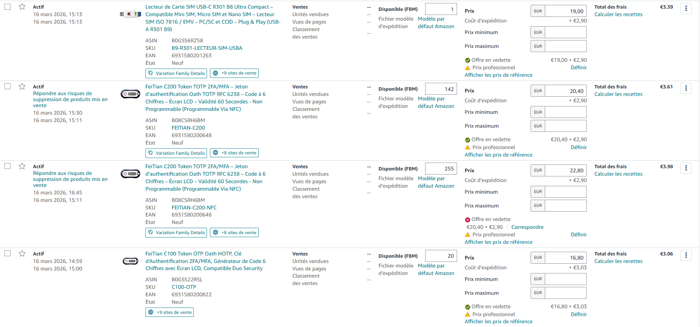
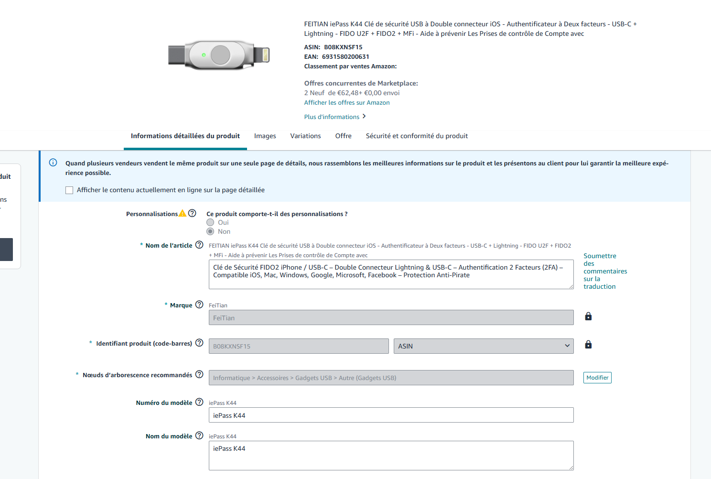
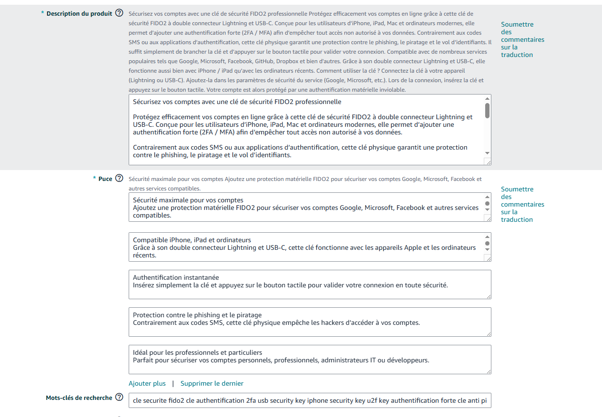
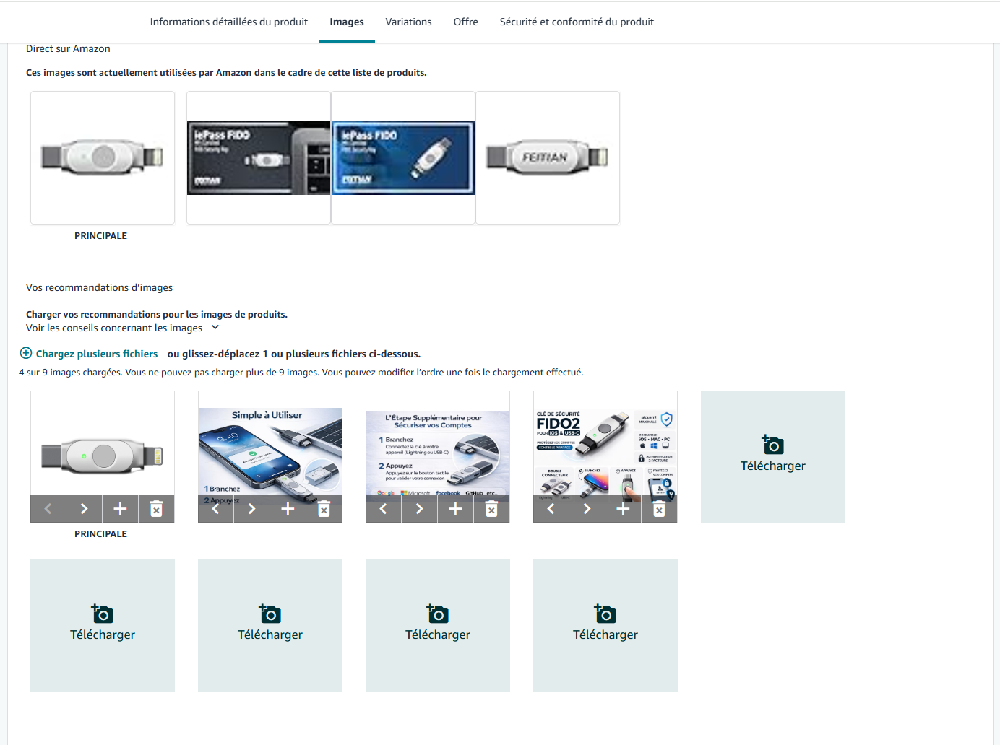
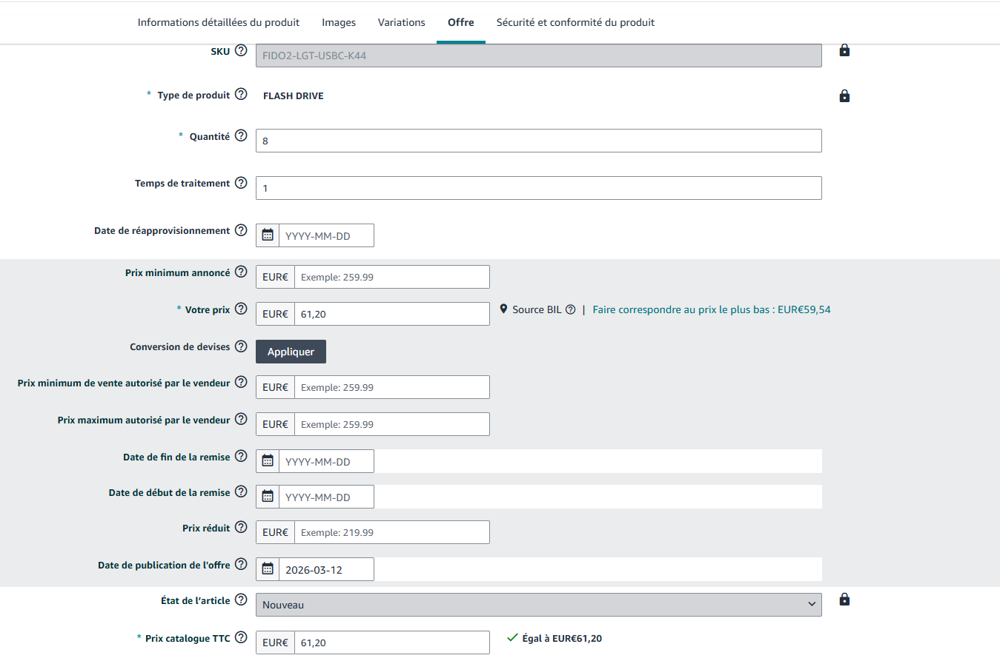
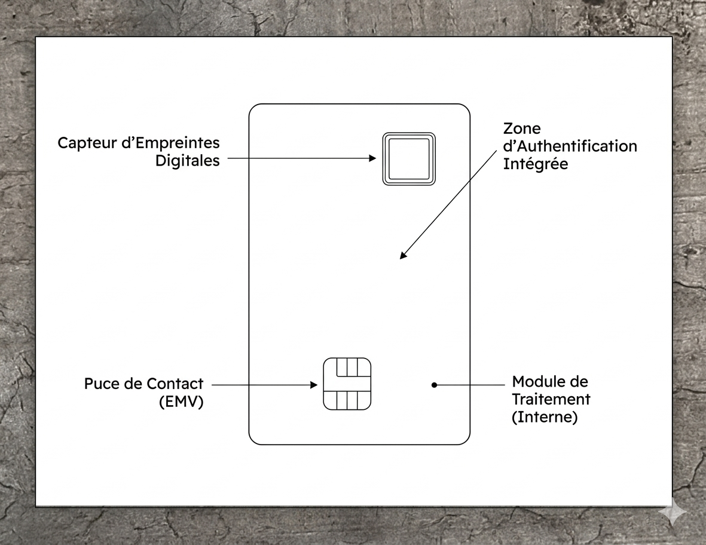

PFMP • reseaux • cybersécurite
Decouvre mon Oral
Cet Oral présente mon expérience de PFMP chez Korum Group, les missions que j'ai réalisées, les outils découverts et les compétences que j'ai développées pendant mon stage.
Remerciements


Je tiens à remercier l’entreprise Korum qui m’a permis de réaliser ma PFMP durant toute sa durée. Je remercie particulièrement l’ensemble du personnel qui m’a accompagné, qui a pris le temps de répondre à mes questions et de me transmettre de nouvelles compétences. Cette expérience m’a permis d’enrichir mes connaissances et de développer des compétences qui me seront utiles dans mes futures activités ainsi que dans ma vie professionnelle.
Sommaire
01
Sommaire
Organisation générale du rapport de PFMP.
02
Présentation de l'entreprise
Entreprise, organigramme et rôle dans le secteur.
03
Activités professionnelles
Missions, outils et tâches réalisées en entreprise.
04
Etude de cas
Analyse d'une situation ou d'un projet technique.
05
Conclusion et annexe
Bilan personnel, compétences et documents complémentaires.
06
Remerciements
Photo de l'equipe et texte de remerciement.
Présentation de l'entreprise
Les activités en entreprise
Mise en ligne de produits sur Amazon
Durant ma PFMP, j’ai été amené à travailler sur la mise en ligne de produits sur la plateforme Amazon.
Dans ce cadre, j’ai effectué des recherches sur différents articles afin de comprendre leurs caractéristiques, leur positionnement sur le marché ainsi que les informations nécessaires à leur mise en vente. J’ai ensuite ajouté environ 15 produits sur Amazon en respectant les différentes étapes de création de fiche produit.
Cette activité m’a permis de découvrir le fonctionnement d’une plateforme de vente en ligne, notamment la gestion des descriptions, des visuels et des informations techniques.
Afin de faciliter cette tâche et d’aider l'équipe, j’ai réalisé un guide détaillant les étapes à suivre pour ajouter un produit sur Amazon. Ce document, présenté en annexe, explique de manière claire la procédure à suivre.
Cette activité m’a permis de développer mes compétences en recherche, en organisation et en utilisation d’outils numériques professionnels.






Carte biométrique
Durant ma PFMP, j’ai été amené à travailler sur une carte biométrique utilisée dans le cadre du contrôle d’accès et de la sécurisation des données.
Dans un premier temps, j’ai découvert le fonctionnement de ce produit, notamment ses différents composants ainsi que son rôle dans un système de sécurité. J’ai ensuite réalisé plusieurs tests afin de comprendre son utilisation, ses fonctionnalités et son comportement en situation réelle.
Ces manipulations m’ont permis d’analyser le produit, d’identifier ses avantages ainsi que ses limites, et de mieux comprendre son intégration dans un environnement professionnel.
Afin de structurer mes observations, j’ai réalisé une documentation complète du produit, présentée en annexe, qui détaille son fonctionnement, ses caractéristiques techniques et ses usages.
Cette activité m’a permis de développer mes compétences techniques, ma capacité d’analyse et mon autonomie dans la prise en main d’un nouveau matériel.



Kasier université Brest
Dans le cadre de ma PFMP, j’ai participé à une intervention au sein de l’Université de Brest concernant un système de casiers sécurisés.
Cette installation repose sur un système électronique permettant de contrôler l’ouverture et la fermeture des casiers grâce à des dispositifs d’accès sécurisés. J’ai été amené à réaliser le câblage interne des casiers, en reliant les différents composants électriques et électroniques (alimentation, cartes de contrôle, modules de commande).
J’ai également configuré des utilisateurs afin de tester le bon fonctionnement du système. Ces tests consistaient à vérifier l’ouverture des portes via les moyens d’accès (badge, système de contrôle), ainsi que la communication entre les différents éléments du dispositif.
Cette activité m’a permis de développer mes compétences en câblage, en installation de systèmes électroniques et en configuration de solutions de contrôle d’accès. Elle m’a également appris à effectuer des tests fonctionnels pour valider le bon fonctionnement d’une installation.


Video de test
Etude de cas
Conclusion
Cette PFMP au sein de Korum Group m’a permis de découvrir concrètement le fonctionnement d’une entreprise spécialisée dans l’informatique et la cybersécurité.
J’ai pu développer mes compétences techniques, gagner en autonomie et mieux comprendre les attentes du monde professionnel.
Cette expérience a été enrichissante et confirme mon intérêt pour le domaine informatique, que je souhaite poursuivre dans mon parcours professionnel.